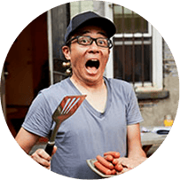
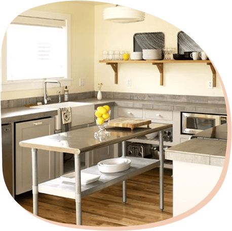

專業背景：
曾任職於米其林三星餐廳 Mirazur 甜點部門，擁有豐富的國際級甜點製作經驗。
教學經驗：
心蕾老師擅長將複雜的甜點配方和技巧，拆解成容易理解的步驟，讓初學者也能輕鬆上手。
教學風格溫柔細膩且充滿耐心，注重學員的實際操作與問題解答，確保每個人都能紮實學習。

專業背景：
擁有國內多項烘焙競賽冠軍頭銜，並曾於知名烘焙坊擔任產品研發主廚。
教學經驗：
哲宇老師的教學風格活潑有趣，充滿啟發性。
他善於鼓勵學員發揮創意，並樂於分享業界的實用技巧和食材知識。
無論是基礎技巧或進階應用，他都能以深入淺出的方式引導學員，讓學習過程充滿樂趣。
位於新北市板橋市區，鄰近板橋捷運站，交通方便。
我們精心打造了一個明亮、寬敞、舒適的烘焙空間，配備專業級的烘焙設備和工具。
無論是個人學習，還是親子同樂，都能在這裡找到屬於您的角落。
